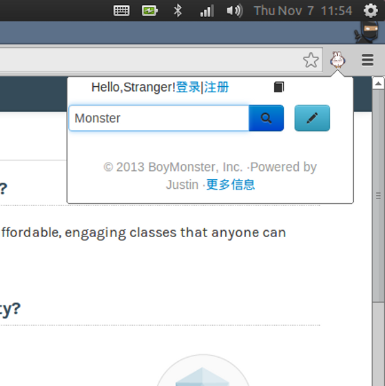
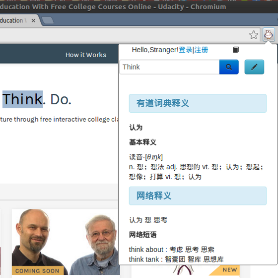
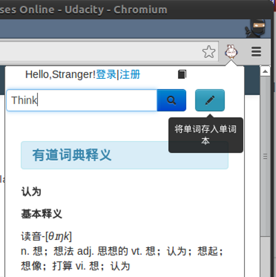
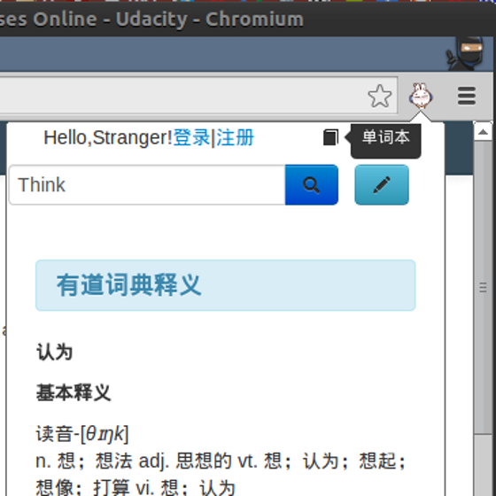

1.安装与使用说明
{% set carousel_sets =[
("../static/assets/img/1-chrome-menu.png","1-打开chrome拓展程序页面(安装插件)","单击chrome菜单图标，在菜单中选择工具〉扩展程序，这会打开扩展管理的页面"),
("../static/assets/img/2-extensions.png","2-进入拓展程序页面(安装插件)",""),
("../static/assets/img/3-drag-for-install.png","3-安装应用(安装插件)","找到下载的.crx程序，将文件拖放到 拓展程序页面 进行安装"),
("../static/assets/img/4-choose-install.png","4-确认安装(安装插件)","选择确认对话框的 添加 按钮，确认安装"),
("../static/assets/img/5-installed.png","5-安装成功(安装插件)","安装成功后，浏览器右上方会出现插件的小图标，拓展程序页面会出现程序的管理信息和选项。"),
("../static/assets/img/7-webpage-usage.png","6-插件使用之划词翻译","在页面上用光标任意选中文字，再单击插件小图标，获取翻译"),
("../static/assets/img/8-webpage-usage2.png","7-划词翻译结果","有道词典+网络释义=更加准确"),
("../static/assets/img/9-webpage-usage3.png","8-把单词写入单词本","具有单词本的功能，比他类Dictionary插件功能更强，更能满足用户需求"),
("../static/assets/img/10-webpage-usage4.png","9-单词本","将单词存入云端，随时随地获取，不丢失"),
("../static/assets/img/11-webpage-usage5.png","10-任意输入查词","单击图标，输入任意想查询的词汇，中英文双向查询"),
("../static/assets/img/12-webpage-usage6.png","11-任意查询结果","")] -%}
{% for src,h1,p in carousel_sets %}
 {% endfor %}
{% endfor %}
‹
›
{{ h1 }}
{{ p }}
3.特 性

任意输入查词
单击浏览器上兔斯基的图标，打开查询框，360度无死角查询。中英文双向查询，不只是查单词哟！

网页划词查询
网页划词查询，更省力。再网页上任意用光标划词，单击浏览器上兔斯基的图标，即可获得查询结果，免输入！

将单词存入单词本
将单词存入单词本，记入单词本的单词永不丢失，便于以后复习，不用中止当前工作。

我的单词本
单词本保存了之前存入的单词。单击进入我的单词本，妈妈再也不用担心我的单词量了！